Análisis Exploratorio de datos#
# 1. Cargue y análisis preliminar de datos
# Importar librerías
import pandas as pd
import numpy as np
import matplotlib.pyplot as plt
import seaborn as sns
# Ruta del archivo
ruta_datos = "C:/AST_Misisipi/EDA/Datos_crudos_Mississippi.csv"
# Cargar los datos
df = pd.read_csv(ruta_datos)
# Verificar el número de observaciones y variables
print(f"Dimensiones del conjunto de datos: {df.shape}")
# Ver los primeros registros
print("Primeros 5 registros:")
print(df.head())
# Ver los últimos registros
print("Últimos 5 registros:")
print(df.tail())
Dimensiones del conjunto de datos: (366084, 6)
Primeros 5 registros:
Column1 Column2 Column3 Column4 Column5 Column6
0 agency_cd site_no datetime tz_cd 77624_00060 77624_00060_cd
1 5s 15s 20d 6s 14n 10s
2 USGS 07022000 1995-02-03 14:00 CST 212000 A:[91]
3 USGS 07022000 1995-02-03 14:21 CST 211000 A:[91]
4 USGS 07022000 1995-02-03 15:00 CST 211000 A:[91]
Últimos 5 registros:
Column1 Column2 Column3 Column4 Column5 Column6
366079 USGS 7022000 2025-01-26 11:00 CST 87800 P
366080 USGS 7022000 2025-01-26 11:30 CST 88000 P
366081 USGS 7022000 2025-01-26 12:00 CST 88100 P
366082 USGS 7022000 2025-01-26 12:30 CST 88200 P
366083 USGS 7022000 2025-01-26 13:00 CST 88100 P
C:\Users\Yuliceth Ramos\AppData\Local\Temp\ipykernel_28656\3382092221.py:11: DtypeWarning: Columns (1,4) have mixed types. Specify dtype option on import or set low_memory=False.
df = pd.read_csv(ruta_datos)
import pandas as pd
# Ruta del archivo
ruta_datos = "C:/AST_Misisipi/EDA/Datos_crudos_Mississippi.csv"
# Cargar los datos ignorando las primeras 3 filas
df = pd.read_csv(ruta_datos, skiprows=2)
# Mostrar las primeras filas para verificar
df.head()
| 5s | 15s | 20d | 6s | 14n | 10s | |
|---|---|---|---|---|---|---|
| 0 | USGS | 7022000 | 1995-02-03 14:00 | CST | 212000.0 | A:[91] |
| 1 | USGS | 7022000 | 1995-02-03 14:21 | CST | 211000.0 | A:[91] |
| 2 | USGS | 7022000 | 1995-02-03 15:00 | CST | 211000.0 | A:[91] |
| 3 | USGS | 7022000 | 1995-02-03 15:21 | CST | 211000.0 | A:[91] |
| 4 | USGS | 7022000 | 1995-02-03 16:00 | CST | 211000.0 | A:[91] |
import pandas as pd
# Ruta del archivo
ruta_datos = "C:/AST_Misisipi/EDA/Datos_crudos_Mississippi.csv"
# Cargar los datos ignorando solo las primeras 2 filas
df = pd.read_csv(ruta_datos, skiprows=2)
# Seleccionar solo las columnas 3 y 5 y renombrarlas
df = df.iloc[:, [2, 4]] # Python cuenta desde 0, por eso usamos 2 y 4
df.columns = ["datetime", "height"]
# Mostrar las primeras filas para verificar
df.head()
| datetime | height | |
|---|---|---|
| 0 | 1995-02-03 14:00 | 212000.0 |
| 1 | 1995-02-03 14:21 | 211000.0 |
| 2 | 1995-02-03 15:00 | 211000.0 |
| 3 | 1995-02-03 15:21 | 211000.0 |
| 4 | 1995-02-03 16:00 | 211000.0 |
# Estadísticas Descriptivas
import pandas as pd
# Cargar los datos
ruta_datos = "C:/AST_Misisipi/EDA/Datos_crudos_Mississippi.csv" # Verificar que la ruta sea correcta
df = pd.read_csv(ruta_datos, skiprows=2) # Saltar las primeras 2 filas si es necesario
# Seleccionar solo las columnas relevantes y renombrarlas
df = df.iloc[:, [2, 4]] # Python cuenta desde 0, por eso seleccionamos la columna 3 y 5
df.columns = ["datetime", "height"]
# Convertir la columna datetime a formato de fecha
df["datetime"] = pd.to_datetime(df["datetime"])
df.set_index("datetime", inplace=True) # Establecer datetime como índice
# Estadísticas descriptivas de la columna "height"
statistics = df["height"].describe()
# Mostrar los resultados
print("Estadísticas Descriptivas:")
print(statistics)
# Calcular percentiles específicos
percentiles = df["height"].quantile([0.25, 0.5, 0.75]) # Percentiles 25%, 50% y 75%
print(f"\nPercentiles 25%, 50% y 75%: \n{percentiles}")
Estadísticas Descriptivas:
count 3.660820e+05
mean 2.538147e+05
std 1.564165e+05
min 0.000000e+00
25% 1.290000e+05
50% 2.080000e+05
75% 3.390000e+05
max 1.050000e+06
Name: height, dtype: float64
Percentiles 25%, 50% y 75%:
0.25 129000.0
0.50 208000.0
0.75 339000.0
Name: height, dtype: float64
#Guardar el nuevo archivo con datos limpios
import pandas as pd
# Ruta del archivo original
ruta_datos = "C:/AST_Misisipi/EDA/Datos_crudos_Mississippi.csv"
# Cargar los datos ignorando solo las primeras 2 filas
df = pd.read_csv(ruta_datos, skiprows=2)
# Seleccionar solo las columnas 3 y 5 y renombrarlas
df = df.iloc[:, [2, 4]] # Python cuenta desde 0, por eso usamos 2 y 4
df.columns = ["datetime", "height"]
# Guardar el nuevo archivo limpio
ruta_nueva = "C:/AST_Misisipi/EDA/Datos_Limpios_Mississippi.csv"
df.to_csv(ruta_nueva, index=False)
print(f"Nuevo archivo guardado en: {ruta_nueva}")
Nuevo archivo guardado en: C:/AST_Misisipi/EDA/Datos_Limpios_Mississippi.csv
# VErificar si la frecuencia de la serie es regular o irregular
import pandas as pd
# Ruta del archivo limpio
ruta_nueva = "C:/AST_Misisipi/EDA/Datos_Limpios_Mississippi.csv"
# Cargar los datos limpios
df = pd.read_csv(ruta_nueva, parse_dates=['datetime'])
# Ordenar los datos por fecha
df = df.sort_values(by="datetime")
# Tomar los primeros 10 registros
df_subset = df.head(10)
# Calcular las diferencias de tiempo entre observaciones consecutivas
df_subset['time_diff'] = df_subset['datetime'].diff()
# Mostrar las diferencias de tiempo
print("Diferencias de tiempo entre registros consecutivos:")
print(df_subset[['datetime', 'time_diff']])
# Verificar si todas las diferencias son iguales
es_regular = df_subset['time_diff'].iloc[1:].nunique() == 1 # Ignoramos la primera fila (NaT)
# Mostrar el resultado final
if es_regular:
print("\n✅ La frecuencia de la serie es REGULAR.")
else:
print("\n⚠️ La frecuencia de la serie es IRREGULAR.")
Diferencias de tiempo entre registros consecutivos:
datetime time_diff
0 1995-02-03 14:00:00 NaT
1 1995-02-03 14:21:00 0 days 00:21:00
2 1995-02-03 15:00:00 0 days 00:39:00
3 1995-02-03 15:21:00 0 days 00:21:00
4 1995-02-03 16:00:00 0 days 00:39:00
5 1995-02-03 16:21:00 0 days 00:21:00
6 1995-02-03 17:00:00 0 days 00:39:00
7 1995-02-03 17:21:00 0 days 00:21:00
8 1995-02-03 18:00:00 0 days 00:39:00
9 1995-02-03 18:21:00 0 days 00:21:00
⚠️ La frecuencia de la serie es IRREGULAR.
C:\Users\Yuliceth Ramos\AppData\Local\Temp\ipykernel_28656\3105416218.py:17: SettingWithCopyWarning:
A value is trying to be set on a copy of a slice from a DataFrame.
Try using .loc[row_indexer,col_indexer] = value instead
See the caveats in the documentation: https://pandas.pydata.org/pandas-docs/stable/user_guide/indexing.html#returning-a-view-versus-a-copy
df_subset['time_diff'] = df_subset['datetime'].diff()
# Ajustar la frecuencia de los datos a 30 minutos
import pandas as pd
# Ruta del archivo limpio
ruta_nueva = "C:/AST_Misisipi/EDA/Datos_Limpios_Mississippi.csv"
# Cargar los datos limpios
df = pd.read_csv(ruta_nueva, parse_dates=['datetime'])
# Renombrar columna para asegurarnos de que "datetime" existe correctamente
df.rename(columns=lambda x: x.strip(), inplace=True) # Eliminar espacios ocultos en los nombres de columnas
df.rename(columns={'DateTime': 'datetime'}, inplace=True)
# Ajustar la frecuencia a 30 minutos
df_resampled = df.set_index('datetime').resample('30min').mean()
# Mostrar las primeras filas después del resampleo
print("Primeras filas después del resampleo:")
print(df_resampled.head(10))
Primeras filas después del resampleo:
height
datetime
1995-02-03 14:00:00 211500.0
1995-02-03 14:30:00 NaN
1995-02-03 15:00:00 211000.0
1995-02-03 15:30:00 NaN
1995-02-03 16:00:00 211500.0
1995-02-03 16:30:00 NaN
1995-02-03 17:00:00 212000.0
1995-02-03 17:30:00 NaN
1995-02-03 18:00:00 212000.0
1995-02-03 18:30:00 NaN
# Número de filas en el DataFrame original
num_filas_original = df.shape[0]
# Número de filas en el DataFrame después del resampleo
num_filas_resampleado = df_resampled.shape[0]
# Mostrar los resultados
print(f"🔹 Número de filas en el DataFrame original: {num_filas_original}")
print(f"🔹 Número de filas en el DataFrame después del resampleo: {num_filas_resampleado}")
🔹 Número de filas en el DataFrame original: 366082
🔹 Número de filas en el DataFrame después del resampleo: 525599
# Calcular el porcentaje de valores NaN en cada columna
porcentaje_nan_columnas = df_resampled.isnull().mean() * 100
# Mostrar los resultados
print("Porcentaje de valores NaN por columna:")
print(porcentaje_nan_columnas)
# Mostrar solo el porcentaje en la columna 'height'
if 'height' in df_resampled.columns:
print(f"\nPorcentaje de valores NaN en la columna 'height': {porcentaje_nan_columnas['height']:.2f}%")
else:
print("\nLa columna 'height' no se encuentra en el DataFrame.")
Porcentaje de valores NaN por columna:
height 30.661588
dtype: float64
Porcentaje de valores NaN en la columna 'height': 30.66%
# Imputar usando medias móviles con una ventana de 5 periodos (ajustable)
df_resampled['height_imputed'] = df_resampled['height'].fillna(df_resampled['height'].rolling(window=5, min_periods=1).mean())
# Verificar que los datos faltantes han sido imputados
print(df_resampled.isnull().sum()) # Debería dar 0 si la imputación fue exitosa
height 161157
height_imputed 18394
dtype: int64
from statsmodels.tsa.arima.model import ARIMA
# Entrenar el modelo ARIMA para imputar los valores faltantes
model = ARIMA(df_resampled['height'], order=(1, 1, 1)) # Se puede con diferentes valores de p, d, q
model_fit = model.fit()
# Imputar los valores faltantes con el modelo ARIMA
df_resampled['height_imputed_arima'] = df_resampled['height'].fillna(model_fit.predict(start=0, end=len(df_resampled)-1))
# Verificar que los datos faltantes han sido imputados
print(df_resampled.isnull().sum()) # Debería dar 0 si la imputación fue exitosa
height 161157
height_imputed 18394
height_imputed_arima 0
dtype: int64
# 2. Visualización de la Serie
# Graficar los datos imputados
import matplotlib.pyplot as plt
plt.figure(figsize=(12, 6))
plt.plot(df_resampled.index, df_resampled["height_imputed_arima"], label="Datos imputados", color="green")
# Agregar etiquetas y título
plt.xlabel("Fecha")
plt.ylabel('Caudal ($\mathrm{ft}^3/s$)')
plt.title("Visualización Serie con Datos Imputados")
plt.legend()
# Guardar la gráfica como imagen
plt.savefig("C:/Users/Yuliceth Ramos/AST_Misisipi/EDA/visualizacion_datos_imputados.png", dpi=300, bbox_inches='tight')
# Mostrar la gráfica
plt.show()
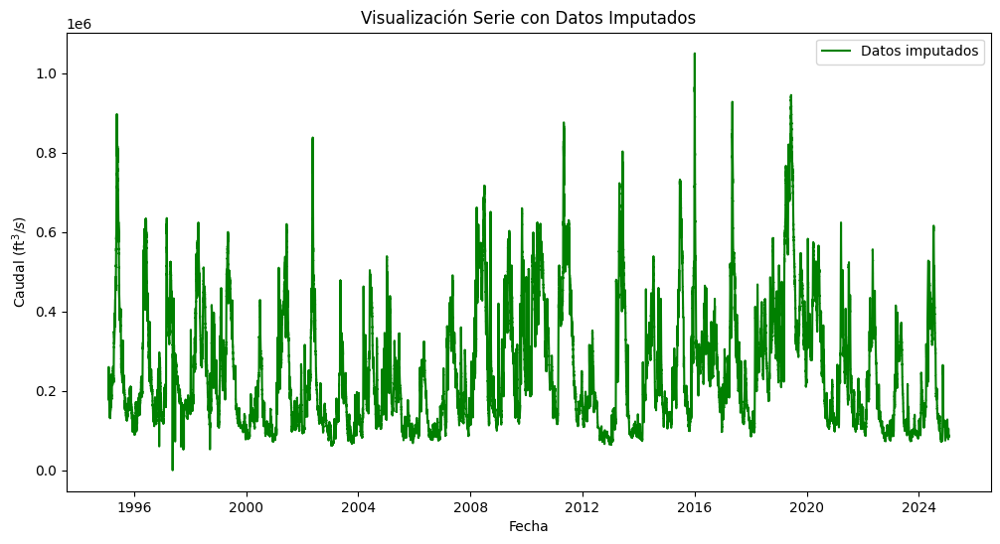
# Descomponer la serie temporal
import matplotlib.pyplot as plt
from statsmodels.tsa.seasonal import seasonal_decompose
# Descomponer la serie temporal
decomposition = seasonal_decompose(df_resampled['height_imputed_arima'], model='additive', period=50000)
# Graficar los componentes
plt.figure(figsize=(12, 8))
# Gráfico de la serie original
plt.subplot(411)
plt.plot(df_resampled.index, df_resampled['height_imputed_arima'], label='Serie Original')
plt.legend(loc='upper left')
# Gráfico de la tendencia
plt.subplot(412)
plt.plot(df_resampled.index, decomposition.trend, label='Tendencia', color='orange')
plt.legend(loc='upper left')
# Gráfico de la estacionalidad
plt.subplot(413)
plt.plot(df_resampled.index, decomposition.seasonal, label='Estacionalidad', color='green')
plt.legend(loc='upper left')
# Gráfico de los residuales (componentes irregulares)
plt.subplot(414)
plt.plot(df_resampled.index, decomposition.resid, label='Residuales', color='red')
plt.legend(loc='upper left')
plt.tight_layout()
plt.savefig("descomposicion_serie_temporal.png", dpi=300, bbox_inches='tight')
plt.show()
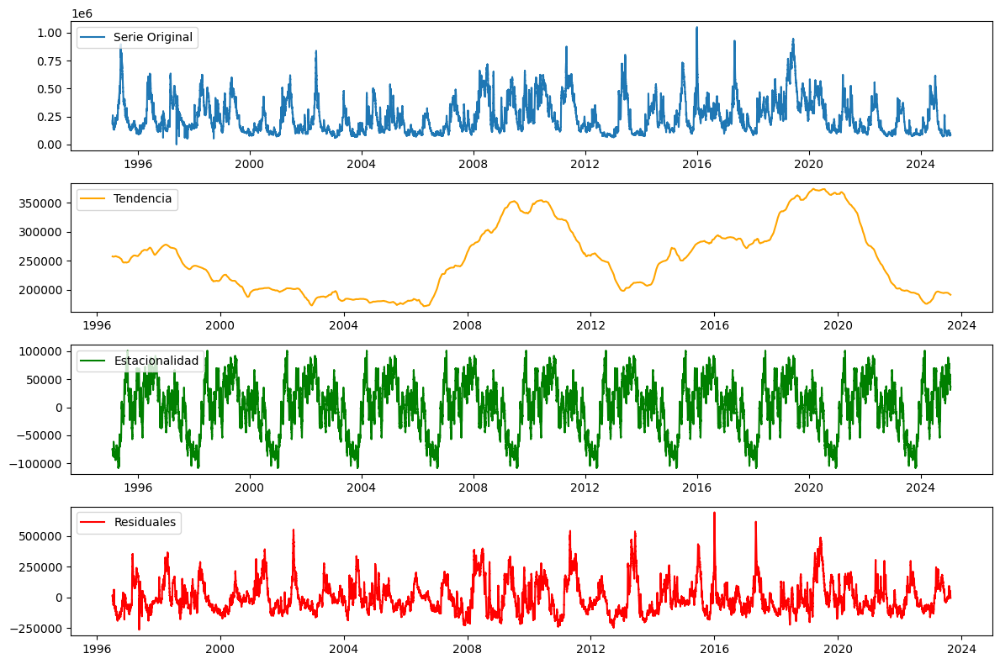
# Detección de anomalías
# Agrupar por mes y crear un gráfico de cajas para comparar distribuciones mensuales
# Asegurar que el índice es de tipo datetime
df_resampled = df_resampled.reset_index() # Si 'datetime' es el índice, lo convertimos en columna
# Crear la columna 'month' a partir de la fecha
df_resampled['month'] = df_resampled['datetime'].dt.month
# Volver a establecer 'datetime' como índice
df_resampled = df_resampled.set_index('datetime')
import seaborn as sns
import matplotlib.pyplot as plt
plt.figure(figsize=(12, 6))
sns.boxplot(x=df_resampled['month'], y=df_resampled['height_imputed'], palette="Blues")
plt.xlabel("Mes")
plt.ylabel('Caudal ($\mathrm{ft}^3/s$)')
plt.title("Distribución del Nivel del Río por Mes")
plt.show()
C:\Users\Yuliceth Ramos\AppData\Local\Temp\ipykernel_28656\1893373979.py:15: FutureWarning:
Passing `palette` without assigning `hue` is deprecated and will be removed in v0.14.0. Assign the `x` variable to `hue` and set `legend=False` for the same effect.
sns.boxplot(x=df_resampled['month'], y=df_resampled['height_imputed'], palette="Blues")
# Detección de anomalías
from scipy.stats import zscore
# Calcular el Z-score para cada valor de la columna 'height_imputed'
z_scores = zscore(df_resampled['height_imputed_arima'])
# Identificar los valores con Z-score mayor a 3 o menor a -3
outliers = df_resampled[abs(z_scores) > 3]
# Mostrar los outliers detectados
print(f"Outliers detectados: {outliers}")
Outliers detectados: height height_imputed height_imputed_arima month
datetime
1995-05-18 23:00:00 714000.0 714000.0 714000.000000 5
1995-05-18 23:30:00 NaN 712000.0 713259.438362 5
1995-05-19 00:00:00 720000.0 720000.0 720000.000000 5
1995-05-19 00:30:00 NaN 717000.0 718882.493669 5
1995-05-19 01:00:00 720000.0 720000.0 720000.000000 5
... ... ... ... ...
2019-07-05 11:00:00 715000.0 715000.0 715000.000000 7
2019-07-05 11:30:00 714000.0 714000.0 714000.000000 7
2019-07-05 12:30:00 714000.0 714000.0 714000.000000 7
2019-07-05 13:00:00 713000.0 713000.0 713000.000000 7
2019-07-05 13:30:00 713000.0 713000.0 713000.000000 7
[6443 rows x 4 columns]
# 3. Estacionalidad y periodicidad
# Crear una figura con dos subgráficos (uno al lado del otro)
import matplotlib.pyplot as plt
from statsmodels.graphics.tsaplots import plot_acf, plot_pacf
fig, (ax1, ax2) = plt.subplots(1, 2, figsize=(15, 6))
# Graficar ACF en el primer subgráfico
plot_acf(df_resampled['height_imputed_arima'], lags=250, alpha=0.001, ax=ax1)
ax1.set_title("ACF - Autocorrelación del Nivel del Río")
# Graficar PACF en el segundo subgráfico
plot_pacf(df_resampled['height_imputed_arima'], lags=50, alpha=0.05, ax=ax2)
ax2.set_title("PACF - Autocorrelación Parcial del Nivel del Río")
# Ajustar el espaciado entre las gráficas
plt.tight_layout()
plt.show()
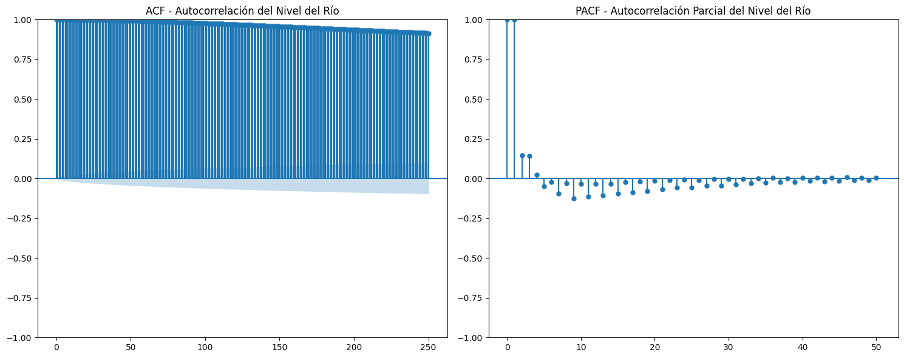
# Transformación del dominio del tiempo
# Crear una figura con 4 subgráficos (2 arriba, 2 abajo)
# Agregar por diferentes periodos de tiempo
df_monthly = df_resampled['height_imputed'].resample('M').mean() # Mensual
df_quarterly = df_resampled['height_imputed'].resample('Q').mean() # Trimestral
df_semiannual = df_resampled['height_imputed'].resample('6M').mean() # Semestral
df_annual = df_resampled['height_imputed'].resample('A').mean() # Anual
C:\Users\Yuliceth Ramos\AppData\Local\Temp\ipykernel_28656\1135662482.py:5: FutureWarning: 'M' is deprecated and will be removed in a future version, please use 'ME' instead.
df_monthly = df_resampled['height_imputed'].resample('M').mean() # Mensual
C:\Users\Yuliceth Ramos\AppData\Local\Temp\ipykernel_28656\1135662482.py:6: FutureWarning: 'Q' is deprecated and will be removed in a future version, please use 'QE' instead.
df_quarterly = df_resampled['height_imputed'].resample('Q').mean() # Trimestral
C:\Users\Yuliceth Ramos\AppData\Local\Temp\ipykernel_28656\1135662482.py:7: FutureWarning: 'M' is deprecated and will be removed in a future version, please use 'ME' instead.
df_semiannual = df_resampled['height_imputed'].resample('6M').mean() # Semestral
C:\Users\Yuliceth Ramos\AppData\Local\Temp\ipykernel_28656\1135662482.py:8: FutureWarning: 'A' is deprecated and will be removed in a future version, please use 'YE' instead.
df_annual = df_resampled['height_imputed'].resample('A').mean() # Anual
import matplotlib.pyplot as plt
# Crear figura con 2 filas y 2 columnas
fig, axs = plt.subplots(2, 2, figsize=(15, 10))
# Graficar el promedio mensual
axs[0, 0].plot(df_monthly.index, df_monthly, label='Promedio Mensual', color='blue')
axs[0, 0].set_title('Promedio Mensual del Nivel del Río')
axs[0, 0].set_xlabel('Fecha')
axs[0, 0].set_ylabel('Caudal ($\mathrm{ft}^3/s$)')
axs[0, 0].legend()
# Graficar el promedio trimestral
axs[0, 1].plot(df_quarterly.index, df_quarterly, label='Promedio Trimestral', color='green')
axs[0, 1].set_title('Promedio Trimestral del Nivel del Río')
axs[0, 1].set_xlabel('Fecha')
axs[0, 1].set_ylabel('Caudal ($\mathrm{ft}^3/s$)')
axs[0, 1].legend()
# Graficar el promedio semestral
axs[1, 0].plot(df_semiannual.index, df_semiannual, label='Promedio Semestral', color='orange')
axs[1, 0].set_title('Promedio Semestral del Nivel del Río')
axs[1, 0].set_xlabel('Fecha')
axs[1, 0].set_ylabel('Caudal ($\mathrm{ft}^3/s$)')
axs[1, 0].legend()
# Graficar el promedio anual
axs[1, 1].plot(df_annual.index, df_annual, label='Promedio Anual', color='red')
axs[1, 1].set_title('Promedio Anual del Nivel del Río')
axs[1, 1].set_xlabel('Fecha')
axs[1, 1].set_ylabel('Caudal ($\mathrm{ft}^3/s$)')
axs[1, 1].legend()
# Ajustar diseño
plt.tight_layout()
plt.show()
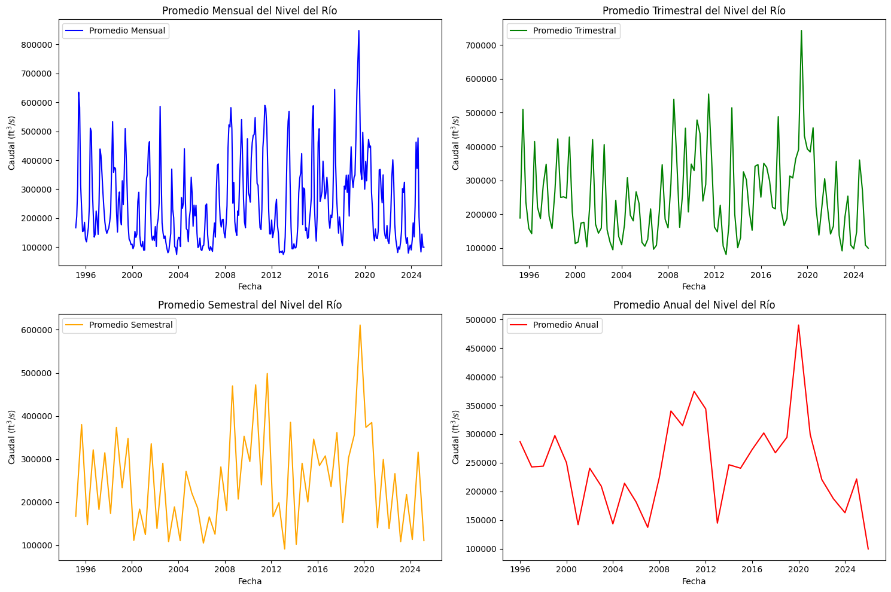
# 4. Análisis de tendencia
# Aplicar la media móvil con la ventana de 1440 registros
df["height_moving_avg"] = df["height"].rolling(window=1440).mean()
# Graficar la serie original y la media móvil mensual
plt.figure(figsize=(12, 6))
plt.plot(df["datetime"], df["height"], alpha=0.5, label="Nivel del río (original)", color="blue")
plt.plot(df["datetime"], df["height_moving_avg"], label="Media móvil (mensual)", color="green", linewidth=2)
plt.xlabel("Fecha")
plt.ylabel('Caudal ($\mathrm{ft}^3/s$)')
plt.title("Tendencia del Nivel del Río con Media Móvil mensual")
plt.xticks(rotation=45)
plt.legend()
plt.show()
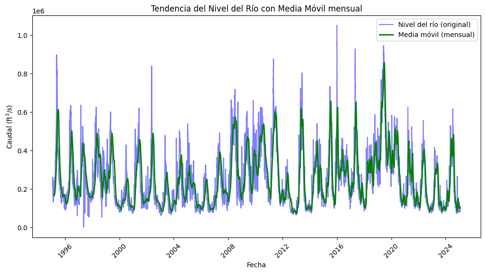
# Media móvil Semestral
df["height_moving_avg"] = df["height"].rolling(window=8640).mean()
# Graficar la serie original y la media móvil
plt.figure(figsize=(12, 6))
plt.plot(df["datetime"], df["height"], alpha=0.5, label="Nivel del río (original)", color="blue")
plt.plot(df["datetime"], df["height_moving_avg"], label="Media Móvil (Semestral", color="red", linewidth=2)
plt.xlabel("Fecha")
plt.ylabel('Caudal ($\mathrm{ft}^3/s$)')
plt.title("Tendencia del Nivel del Río con Media Móvil Semestral")
plt.xticks(rotation=45)
plt.legend()
plt.show()
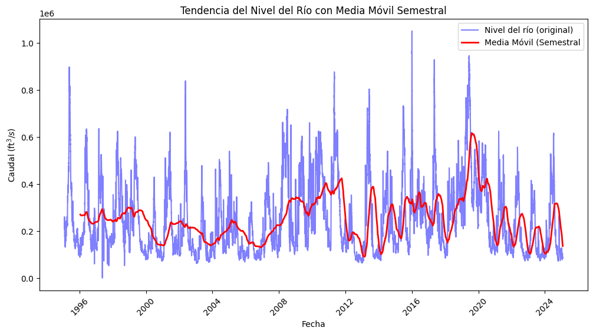
# Suavización exponencial con un factor de suavización alpha
df["height_ewm"] = df["height"].ewm(span=8640).mean() #semestral
# Graficar la serie original y el suavizado exponencial
plt.figure(figsize=(12, 6))
plt.plot(df["datetime"], df["height"], alpha=0.5, label="Nivel del río (original)", color="blue")
plt.plot(df["datetime"], df["height_ewm"], label="Suavización Exponencial (semestral)", color="red", linewidth=2)
plt.xlabel("Fecha")
plt.ylabel('Caudal ($\mathrm{ft}^3/s$)')
plt.title("Tendencia del Nivel del Río con Suavización Exponencial")
plt.xticks(rotation=45)
plt.legend()
plt.show()
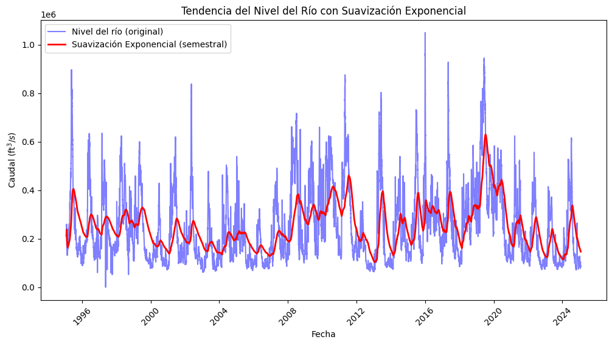
# Aplicar suavización exponencial ponderada
df_resampled['height_ewm'] = df_resampled['height_imputed'].ewm(span=4820, adjust=False).mean()
# Graficar la serie suavizada
df_resampled['height_ewm'].plot(figsize=(12, 6), title="Serie con Media Exponencial Ponderada")
plt.show()
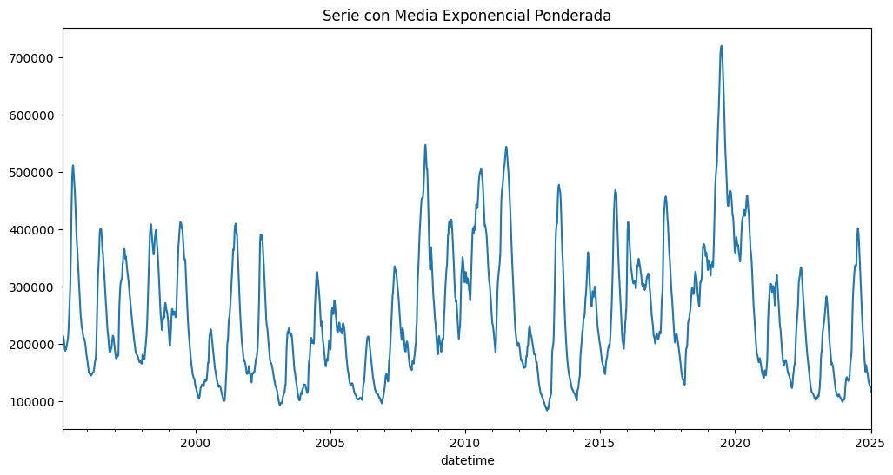
from statsmodels.tsa.stattools import adfuller
# Aplicar la prueba ADF
result = adfuller(df["height"].dropna()) # Eliminar valores nulos
print(f'Estadístico ADF: {result[0]}')
print(f'Valor p: {result[1]}')
print(f'Valores críticos: {result[4]}')
if result[1] < 0.05:
print("Rechazamos la hipótesis nula: los datos son estacionarios.")
else:
print("No podemos rechazar la hipótesis nula: los datos no son estacionarios.")
Estadístico ADF: -10.271382707554162
Valor p: 3.9931950914494306e-18
Valores críticos: {'1%': -3.4303678676510305, '5%': -2.8615478972850723, '10%': -2.5667742034374763}
Rechazamos la hipótesis nula: los datos son estacionarios.
from statsmodels.tsa.stattools import kpss
# Aplicar la prueba KPSS
result_kpss = kpss(df["height"].dropna(), regression='c') # 'c' para prueba de nivel
print(f'Estadístico KPSS: {result_kpss[0]}')
print(f'Valor p: {result_kpss[1]}')
print(f'Valores críticos: {result_kpss[3]}')
if result_kpss[1] < 0.05:
print("Rechazamos la hipótesis nula: los datos no son estacionarios.")
else:
print("No podemos rechazar la hipótesis nula: los datos son estacionarios.")
Estadístico KPSS: 1.82020199176406
Valor p: 0.01
Valores críticos: {'10%': 0.347, '5%': 0.463, '2.5%': 0.574, '1%': 0.739}
Rechazamos la hipótesis nula: los datos no son estacionarios.
C:\Users\Yuliceth Ramos\AppData\Local\Temp\ipykernel_28656\1962471898.py:4: InterpolationWarning: The test statistic is outside of the range of p-values available in the
look-up table. The actual p-value is smaller than the p-value returned.
result_kpss = kpss(df["height"].dropna(), regression='c') # 'c' para prueba de nivel
# Dividir los datos en submuestras (cada 6 meses) y calcular la media y varianza
subsample = df_resampled['height_imputed'].resample('6M') # '6M' para cada 6 meses
# Calcular la media y la varianza de cada submuestra
mean_subsamples = subsample.mean()
var_subsamples = subsample.var()
# Graficar la media y la varianza en función del tiempo
fig, ax = plt.subplots(2, 1, figsize=(12, 10))
# Gráfico de la media
ax[0].plot(mean_subsamples.index, mean_subsamples, label='Media')
ax[0].set_title('Media de los Datos en Submuestras de 6 Meses')
ax[0].set_xlabel('Fecha')
ax[0].set_ylabel('Caudal ($\mathrm{ft}^3/s$)')
ax[0].legend()
# Gráfico de la varianza
ax[1].plot(var_subsamples.index, var_subsamples, label='Varianza', color='orange')
ax[1].set_title('Varianza de los Datos en Submuestras de 6 Meses')
ax[1].set_xlabel('Fecha')
ax[1].set_ylabel('Varianza')
ax[1].legend()
# Ajustar el espaciado y mostrar las gráficas
plt.tight_layout()
plt.show()
C:\Users\Yuliceth Ramos\AppData\Local\Temp\ipykernel_28656\3909271696.py:2: FutureWarning: 'M' is deprecated and will be removed in a future version, please use 'ME' instead.
subsample = df_resampled['height_imputed'].resample('6M') # '6M' para cada 6 meses
# 6.2. Transformaciones de datos
# Aplicar logaritmo a la serie para estabilizar la varianza
import numpy as np
df_resampled['height_log'] = np.log(df_resampled['height_imputed'])
# Graficar para comparar la serie original con la transformada
plt.figure(figsize=(12, 6))
plt.plot(df_resampled.index, df_resampled['height_log'], label='Log Transformada', linestyle='--')
plt.title('Transformación Logarítmica de los Datos del Nivel del Río Misisipi')
plt.xlabel('Fecha')
plt.ylabel('Caudal ($\mathrm{ft}^3/s$)')
plt.legend()
plt.show()
c:\Users\Yuliceth Ramos\.conda\envs\ml-env\lib\site-packages\pandas\core\arraylike.py:399: RuntimeWarning: divide by zero encountered in log
result = getattr(ufunc, method)(*inputs, **kwargs)
# Diferenciación de la serie para eliminar la tendencia
df_resampled['height_diff'] = df_resampled['height_imputed'].diff()
# Graficar para comparar la serie original con la diferenciada
plt.figure(figsize=(12, 6))
plt.plot(df_resampled.index, df_resampled['height_diff'], label='Diferenciación', linestyle='--')
plt.title('Diferenciación de los Datos del Nivel del Río Misisipi')
plt.xlabel('Fecha')
plt.ylabel('Caudal ($\mathrm{ft}^3/s$)')
plt.legend()
plt.show()
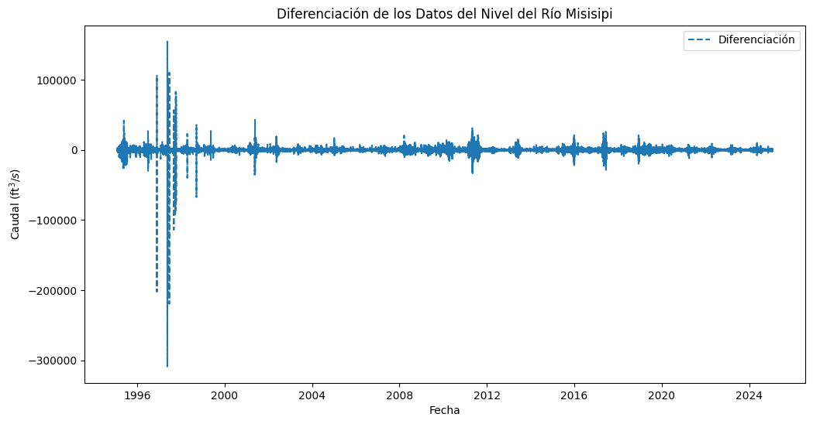
from statsmodels.tsa.stattools import adfuller
# Realizar la prueba ADF en la serie diferenciada
adf_test = adfuller(df_resampled['height_diff'].dropna())
# Mostrar los resultados de la prueba ADF
print(f'Estadístico ADF: {adf_test[0]}')
print(f'Valor p: {adf_test[1]}')
print(f'Valores críticos: {adf_test[4]}')
# Evaluar si la serie es estacionaria
if adf_test[1] < 0.05:
print("La serie es estacionaria según la prueba ADF.")
else:
print("La serie no es estacionaria según la prueba ADF.")
Estadístico ADF: -47.1974772256423
Valor p: 0.0
Valores críticos: {'1%': -3.4303629087866403, '5%': -2.8615457055319165, '10%': -2.566773036846194}
La serie es estacionaria según la prueba ADF.
from statsmodels.tsa.stattools import kpss
# Realizar la prueba KPSS en la serie diferenciada
kpss_test = kpss(df_resampled['height_diff'].dropna(), regression='c')
# Mostrar los resultados de la prueba KPSS
print(f'Estadístico KPSS: {kpss_test[0]}')
print(f'Valor p: {kpss_test[1]}')
print(f'Valores críticos: {kpss_test[3]}')
# Evaluar si la serie es estacionaria
if kpss_test[1] < 0.05:
print("La serie no es estacionaria según la prueba KPSS.")
else:
print("La serie es estacionaria según la prueba KPSS.")
Estadístico KPSS: 0.00746979323663413
Valor p: 0.1
Valores críticos: {'10%': 0.347, '5%': 0.463, '2.5%': 0.574, '1%': 0.739}
La serie es estacionaria según la prueba KPSS.
C:\Users\Yuliceth Ramos\AppData\Local\Temp\ipykernel_28656\4222782175.py:4: InterpolationWarning: The test statistic is outside of the range of p-values available in the
look-up table. The actual p-value is greater than the p-value returned.
kpss_test = kpss(df_resampled['height_diff'].dropna(), regression='c')
from statsmodels.graphics.tsaplots import plot_acf, plot_pacf
# Graficar ACF y PACF para la serie diferenciada
fig, axs = plt.subplots(1, 2, figsize=(14, 6))
# ACF
plot_acf(df_resampled['height_diff'].dropna(), lags=50, ax=axs[0], alpha=0.05)
axs[0].set_title('ACF - Serie Diferenciada')
# PACF
plot_pacf(df_resampled['height_diff'].dropna(), lags=50, ax=axs[1], alpha=0.05)
axs[1].set_title('PACF - Serie Diferenciada')
plt.tight_layout()
plt.show()
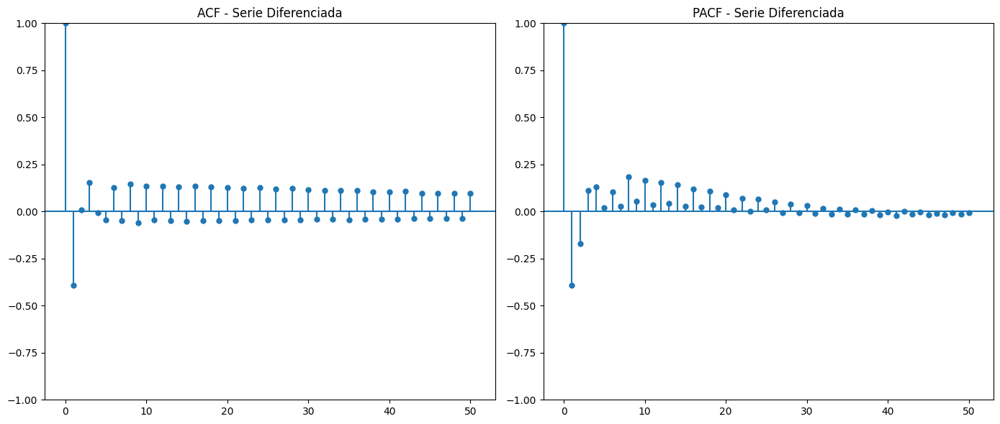
import numpy as np
import matplotlib.pyplot as plt
# Realizar la transformada de Fourier
# Suponemos que df_resampled['height_imputed'] es la serie temporal
data = df_resampled['height_imputed'].dropna()
# Realizar la FFT (Transformada Rápida de Fourier)
fft_result = np.fft.fft(data)
fft_freq = np.fft.fftfreq(len(data))
# Obtener la magnitud de la FFT (espectro de amplitud)
fft_magnitude = np.abs(fft_result)
# Graficar el espectro de amplitud
plt.figure(figsize=(12, 6))
plt.plot(fft_freq, fft_magnitude)
plt.title("Transformada de Fourier - Espectro de Amplitud")
plt.xlabel("Frecuencia (Hz)")
plt.ylabel("Magnitud")
plt.xlim(-0.0004, 0.0004)
plt.ylim(0, 4e10)
plt.show()
# Para visualizar el espectro de potencia, se calcula el cuadrado de la magnitud
power_spectrum = np.square(fft_magnitude)
# Graficar el espectro de potencia
plt.figure(figsize=(12, 6))
plt.plot(fft_freq, power_spectrum)
plt.title("Espectro de Potencia")
plt.xlabel("Frecuencia (Hz)")
plt.ylabel("Potencia")
plt.xlim(-0.0004, 0.0004)
plt.ylim(0, 0.2e22)
plt.show()
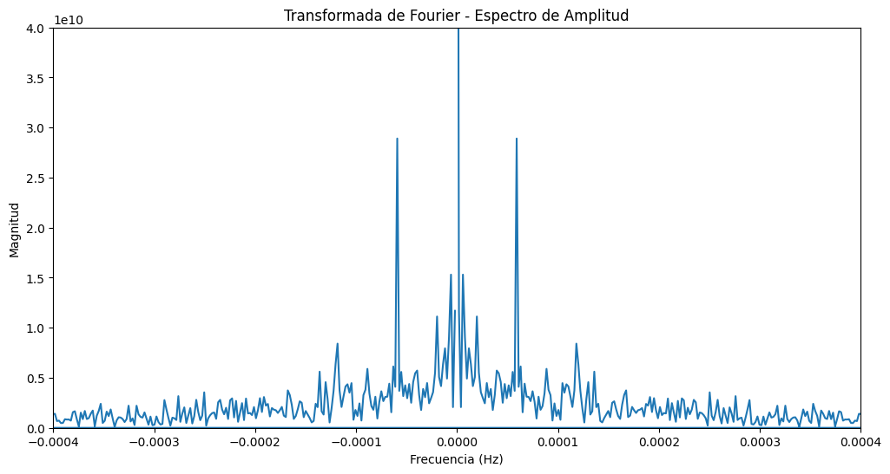
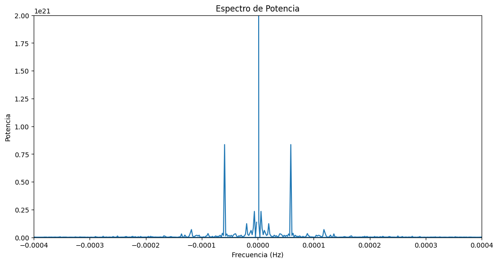
# Calcular el IQR
Q1 = df_resampled['height_imputed'].quantile(0.25)
Q3 = df_resampled['height_imputed'].quantile(0.75)
IQR = Q3 - Q1
# Definir los límites superior e inferior
lower_bound = Q1 - 1.5 * IQR
upper_bound = Q3 + 1.5 * IQR
# Filtrar los valores atípicos
outliers_iqr = df_resampled[(df_resampled['height_imputed'] < lower_bound) | (df_resampled['height_imputed'] > upper_bound)]
# Mostrar los outliers
print(outliers_iqr)
height height_imputed height_imputed_arima month \
datetime
1995-05-18 05:00:00 651000.0 651000.0 651000.000000 5
1995-05-18 06:00:00 650000.0 650000.0 650000.000000 5
1995-05-18 06:30:00 NaN 650500.0 649662.116422 5
1995-05-18 07:00:00 657000.0 657000.0 657000.000000 5
1995-05-18 07:30:00 NaN 653500.0 655815.249622 5
... ... ... ... ...
2019-07-09 07:30:00 651000.0 651000.0 651000.000000 7
2019-07-09 08:00:00 651000.0 651000.0 651000.000000 7
2019-07-09 08:30:00 650000.0 650000.0 650000.000000 7
2019-07-09 09:30:00 650000.0 650000.0 650000.000000 7
2019-07-09 10:30:00 650000.0 650000.0 650000.000000 7
height_ewm height_log height_diff
datetime
1995-05-18 05:00:00 325351.860583 13.386265 14000.0
1995-05-18 06:00:00 325618.885631 13.384728 5500.0
1995-05-18 06:30:00 325753.663111 13.385497 500.0
1995-05-18 07:00:00 325891.081214 13.395439 6500.0
1995-05-18 07:30:00 326026.990327 13.390098 -3500.0
... ... ... ...
2019-07-09 07:30:00 717161.620113 13.386265 1000.0
2019-07-09 08:00:00 717134.172853 13.386265 0.0
2019-07-09 08:30:00 717106.322128 13.384728 -1000.0
2019-07-09 09:30:00 717050.240655 13.384728 1000.0
2019-07-09 10:30:00 716993.791024 13.384728 2000.0
[9687 rows x 7 columns]
Conversión de frecuencia de los datos a 60 minutos
import pandas as pd
import seaborn as sns
import warnings
from matplotlib import pyplot as plt
from sklearn.model_selection import train_test_split
from sklearn.preprocessing import StandardScaler
# Cargar los datos desde Google Drive
df = pd.read_csv('G:\Mi unidad\Modelado_Misisipi/Datos_Limpios_Mississippi.csv')
# Verificar si la columna 'datetime' existe antes de convertirla
if 'datetime' in df.columns:
# Especificar el formato correcto para las fechas
df['datetime'] = pd.to_datetime(df['datetime'], format='%d/%m/%Y %H:%M') # Convertir a formato de fecha
df.set_index('datetime', inplace=True) # Establecerla como índice
else:
print("Advertencia: No se encontró la columna 'datetime' en los datos.")
# Verificar que el encabezado de la columna de datos esté correctamente ajustado a 'Caudal'
if 'Caudal' in df.columns:
print("La columna 'Caudal' se encuentra correctamente.")
else:
print("Advertencia: No se encontró la columna 'Caudal' en los datos.")
# Verificar valores nulos, NaN, ceros, negativos y no numéricos
valores_nulos = df['Caudal'].isnull().sum() # Cantidad de valores nulos
valores_nan = df['Caudal'].isna().sum() # Cantidad de NaN (aunque isnull() y isna() son equivalentes)
valores_ceros = (df['Caudal'] == 0).sum() # Cantidad de ceros
valores_negativos = (df['Caudal'] < 0).sum() # Cantidad de valores negativos
valores_no_numericos = df['Caudal'].apply(pd.to_numeric, errors='coerce').isna().sum() # valores no convertibles a numérico
# Mostrar los resultados
print(f"Valores nulos: {valores_nulos}")
print(f"Valores NaN: {valores_nan}")
print(f"Valores ceros: {valores_ceros}")
print(f"Valores negativos: {valores_negativos}")
print(f"Valores no numéricos: {valores_no_numericos}")
# Ver las primeras filas para asegurarnos de que los datos están bien cargados
print(df.head())
La columna 'Caudal' se encuentra correctamente.
Valores nulos: 0
Valores NaN: 0
Valores ceros: 1
Valores negativos: 0
Valores no numéricos: 0
Caudal
datetime
1995-02-03 14:00:00 212000
1995-02-03 14:21:00 211000
1995-02-03 15:00:00 211000
1995-02-03 15:21:00 211000
1995-02-03 16:00:00 211000
# 1. Ver la totalidad de los datos por fila
# Mostrar todas las columnas del DataFrame para asegurar que no se omiten
pd.set_option('display.max_columns', None) # Mostrar todas las columnas
print(df.head()) # Ver las primeras filas del DataFrame
# Imprimir la cantidad total de datos (número de filas)
total_datos = df.shape[0]
print(f"La cantidad total de datos es: {total_datos} registros.")
# 2. Verificar si la frecuencia de los datos es regular o irregular
# Calcular la diferencia de tiempo entre registros consecutivos
df['time_diff'] = df.index.to_series().diff() # Calcular la diferencia de tiempo
# Revisar si las diferencias son constantes
diferencias_unicas = df['time_diff'].nunique() # Número de diferencias únicas
if diferencias_unicas == 1:
print("La frecuencia de los datos es regular.")
else:
print("La frecuencia de los datos es irregular.")
# Mostrar algunas diferencias de tiempo
print("Algunas diferencias de tiempo:")
print(df['time_diff'].head()) # Mostrar las primeras diferencias de tiempo
Caudal
datetime
1995-02-03 14:00:00 212000
1995-02-03 14:21:00 211000
1995-02-03 15:00:00 211000
1995-02-03 15:21:00 211000
1995-02-03 16:00:00 211000
La cantidad total de datos es: 366082 registros.
La frecuencia de los datos es irregular.
Algunas diferencias de tiempo:
datetime
1995-02-03 14:00:00 NaT
1995-02-03 14:21:00 0 days 00:21:00
1995-02-03 15:00:00 0 days 00:39:00
1995-02-03 15:21:00 0 days 00:21:00
1995-02-03 16:00:00 0 days 00:39:00
Name: time_diff, dtype: timedelta64[ns]
# Eliminar registros duplicados con la misma marca de tiempo exacta
df_clean = df[~df.index.duplicated(keep='first')]
# Mostrar los primeros registros después de la limpieza
print(df_clean.head())
# Guardar el DataFrame limpio en Google Drive
df_clean.to_csv('G:\Mi unidad\Modelado_Misisipi/Datos_Limpios_Sin_Duplicados.csv')
Caudal time_diff
datetime
1995-02-03 14:00:00 212000 NaT
1995-02-03 14:21:00 211000 0 days 00:21:00
1995-02-03 15:00:00 211000 0 days 00:39:00
1995-02-03 15:21:00 211000 0 days 00:21:00
1995-02-03 16:00:00 211000 0 days 00:39:00
# Imprimir la cantidad total de datos (número de filas)
total_datos = df.shape[0]
print(f"La cantidad total de datos es: {total_datos} registros.")
La cantidad total de datos es: 366082 registros.
import pandas as pd
# Asegurar que datetime sea el índice
df_clean = df_clean.sort_index() # Ordenar por fecha
df_regular = df_clean.asfreq('T') # 'T' para frecuencia de 1 minuto
# Calcular diferencias de tiempo
df_regular['time_diff'] = df_regular.index.to_series().diff() # Diferencia entre registros
df_regular['time_diff_minutos'] = df_regular['time_diff'].dt.total_seconds() / 60 # En minutos
df_regular['time_diff_segundos'] = df_regular['time_diff'].dt.total_seconds() # En segundos
# Guardar el DataFrame con NaN en los espacios faltantes
df_regular.to_csv('C:\AST_Misisipi\Modelado_Misisipi/Datos_Regularizados_Solo_Celdas.csv')
# Mostrar las primeras filas para verificar
print(df_regular.head(15))
Caudal time_diff time_diff_minutos \
datetime
1995-02-03 14:00:00 212000.0 NaT NaN
1995-02-03 14:01:00 NaN 0 days 00:01:00 1.0
1995-02-03 14:02:00 NaN 0 days 00:01:00 1.0
1995-02-03 14:03:00 NaN 0 days 00:01:00 1.0
1995-02-03 14:04:00 NaN 0 days 00:01:00 1.0
1995-02-03 14:05:00 NaN 0 days 00:01:00 1.0
1995-02-03 14:06:00 NaN 0 days 00:01:00 1.0
1995-02-03 14:07:00 NaN 0 days 00:01:00 1.0
1995-02-03 14:08:00 NaN 0 days 00:01:00 1.0
1995-02-03 14:09:00 NaN 0 days 00:01:00 1.0
1995-02-03 14:10:00 NaN 0 days 00:01:00 1.0
1995-02-03 14:11:00 NaN 0 days 00:01:00 1.0
1995-02-03 14:12:00 NaN 0 days 00:01:00 1.0
1995-02-03 14:13:00 NaN 0 days 00:01:00 1.0
1995-02-03 14:14:00 NaN 0 days 00:01:00 1.0
time_diff_segundos
datetime
1995-02-03 14:00:00 NaN
1995-02-03 14:01:00 60.0
1995-02-03 14:02:00 60.0
1995-02-03 14:03:00 60.0
1995-02-03 14:04:00 60.0
1995-02-03 14:05:00 60.0
1995-02-03 14:06:00 60.0
1995-02-03 14:07:00 60.0
1995-02-03 14:08:00 60.0
1995-02-03 14:09:00 60.0
1995-02-03 14:10:00 60.0
1995-02-03 14:11:00 60.0
1995-02-03 14:12:00 60.0
1995-02-03 14:13:00 60.0
1995-02-03 14:14:00 60.0
# Paso 1: Rellenar con el último valor conocido (Forward Fill)
df_regular['Caudal'] = df_regular['Caudal'].ffill()
# Paso 2: Suavizar con media móvil de 5 minutos (Rolling Window)
df_regular['Caudal'] = df_regular['Caudal'].rolling(window=5, min_periods=1).mean()
# Guardar el DataFrame con los valores rellenados
df_regular.to_csv('C:\AST_Misisipi\Modelado_Misisipi/Datos_Completos.csv')
# Mostrar los primeros valores para verificar
print(df_regular.head(15))
Caudal time_diff time_diff_minutos \
datetime
1995-02-03 14:00:00 212000.0 NaT NaN
1995-02-03 14:01:00 212000.0 0 days 00:01:00 1.0
1995-02-03 14:02:00 212000.0 0 days 00:01:00 1.0
1995-02-03 14:03:00 212000.0 0 days 00:01:00 1.0
1995-02-03 14:04:00 212000.0 0 days 00:01:00 1.0
1995-02-03 14:05:00 212000.0 0 days 00:01:00 1.0
1995-02-03 14:06:00 212000.0 0 days 00:01:00 1.0
1995-02-03 14:07:00 212000.0 0 days 00:01:00 1.0
1995-02-03 14:08:00 212000.0 0 days 00:01:00 1.0
1995-02-03 14:09:00 212000.0 0 days 00:01:00 1.0
1995-02-03 14:10:00 212000.0 0 days 00:01:00 1.0
1995-02-03 14:11:00 212000.0 0 days 00:01:00 1.0
1995-02-03 14:12:00 212000.0 0 days 00:01:00 1.0
1995-02-03 14:13:00 212000.0 0 days 00:01:00 1.0
1995-02-03 14:14:00 212000.0 0 days 00:01:00 1.0
time_diff_segundos
datetime
1995-02-03 14:00:00 NaN
1995-02-03 14:01:00 60.0
1995-02-03 14:02:00 60.0
1995-02-03 14:03:00 60.0
1995-02-03 14:04:00 60.0
1995-02-03 14:05:00 60.0
1995-02-03 14:06:00 60.0
1995-02-03 14:07:00 60.0
1995-02-03 14:08:00 60.0
1995-02-03 14:09:00 60.0
1995-02-03 14:10:00 60.0
1995-02-03 14:11:00 60.0
1995-02-03 14:12:00 60.0
1995-02-03 14:13:00 60.0
1995-02-03 14:14:00 60.0
import pandas as pd
# Cargar el archivo CSV
df = pd.read_csv('C:\AST_Misisipi\Modelado_Misisipi/Datos_Completos.csv')
# Contar el número total de filas
num_filas = df.shape[0]
# Mostrar el resultado
print(f"Total de filas en el archivo: {num_filas}")
Total de filas en el archivo: 15767941
import pandas as pd
# Cargar la serie de 1 minuto
df = pd.read_csv('C:\AST_Misisipi\Modelado_Misisipi/Datos_Completos.csv', index_col='datetime', parse_dates=True)
# Aplicar media móvil con ventana de 60 minutos
df['Caudal_mm'] = df['Caudal'].rolling(window=60, min_periods=1).mean()
# Resamplear a cada hora, tomando el último valor de la media móvil
df_horario = df.resample('H').last()
# Guardar el resultado
df_horario.to_csv('C:\AST_Misisipi\Modelado_Misisipi/Datos_Horarios.csv')
# Mostrar las primeras filas del nuevo DataFrame
print(df_horario.head())
Caudal time_diff time_diff_minutos \
datetime
1995-02-03 14:00:00 211000.0 0 days 00:01:00 1.0
1995-02-03 15:00:00 211000.0 0 days 00:01:00 1.0
1995-02-03 16:00:00 212000.0 0 days 00:01:00 1.0
1995-02-03 17:00:00 212000.0 0 days 00:01:00 1.0
1995-02-03 18:00:00 212000.0 0 days 00:01:00 1.0
time_diff_segundos Caudal_mm
datetime
1995-02-03 14:00:00 60.0 211383.333333
1995-02-03 15:00:00 60.0 211000.000000
1995-02-03 16:00:00 60.0 211616.666667
1995-02-03 17:00:00 60.0 212000.000000
1995-02-03 18:00:00 60.0 212000.000000
import pandas as pd
# Cargar el DataFrame reducido
df = pd.read_csv('C:\AST_Misisipi\Modelado_Misisipi/Datos_Horarios.csv', index_col=0, parse_dates=True)
# Convertir todas las columnas a tipo numérico, forzando errores a NaN si hay datos no convertibles
df = df.apply(pd.to_numeric, errors='coerce')
# Verificar la cantidad de datos después de la reducción a cada hora
total_datos = len(df)
print(f"Total de datos después de reducir la serie a cada hora: {total_datos}")
Total de datos después de reducir la serie a cada hora: 262800
import numpy as np
import pandas as pd
import matplotlib.pyplot as plt
import seaborn as sns
from scipy.stats import zscore
# Crear una figura con 3 subgráficos en una columna
fig, axes = plt.subplots(nrows=3, ncols=1, figsize=(10, 10), constrained_layout=True)
# 1. Gráfico de la serie temporal
axes[0].plot(df.index, df["Caudal_mm"], label="Caudal por hora", color='b')
axes[0].set_xlabel("Fecha")
axes[0].set_ylabel("Caudal")
axes[0].set_title("Serie de tiempo del Caudal por hora")
axes[0].legend()
# 2. Histograma
axes[1].hist(df["Caudal_mm"], bins=50, edgecolor='black', alpha=0.7, color='c')
axes[1].set_xlabel("Caudal")
axes[1].set_ylabel("Frecuencia")
axes[1].set_title("Histograma del Caudal")
# 3. Boxplot
sns.boxplot(x=df["Caudal_mm"], color="lightblue", ax=axes[2])
axes[2].set_xlabel("Caudal")
axes[2].set_title("Boxplot del Caudal con posibles outliers")
plt.show()
# Detección de outliers con IQR
Q1 = df["Caudal_mm"].quantile(0.25)
Q3 = df["Caudal_mm"].quantile(0.75)
IQR = Q3 - Q1
# Umbrales
limite_inferior = Q1 - 1.5 * IQR
limite_superior = Q3 + 1.5 * IQR
# Filtrar outliers
outliers_iqr = df[(df["Caudal_mm"] < limite_inferior) |
(df["Caudal_mm"] > limite_superior)]
print(f"Outliers detectados con IQR: {len(outliers_iqr)}")
# Detección de outliers con Z-score
z_scores = zscore(df["Caudal_mm"])
outliers_z = df[np.abs(z_scores) > 3]
print(f"Outliers detectados con Z-score: {len(outliers_z)}")
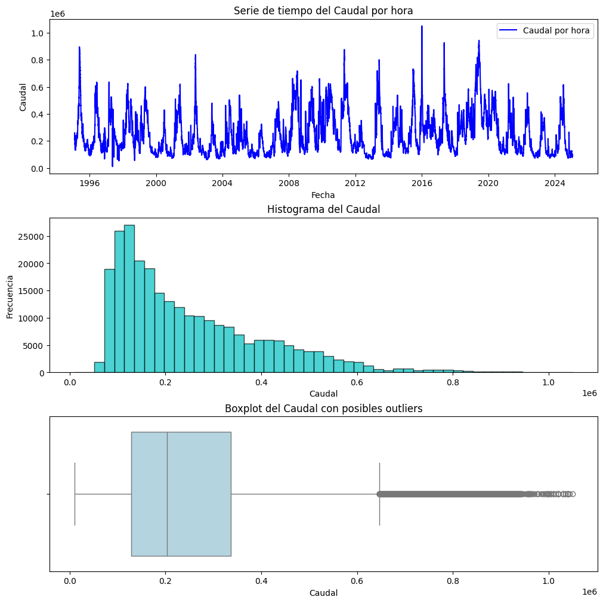
Outliers detectados con IQR: 5018
Outliers detectados con Z-score: 3235
# Calcular estadísticas generales
estadisticas = df["Caudal_mm"].describe(percentiles=[0.05, 0.25, 0.5, 0.75, 0.95])
# Identificar valores altos
percentil_95 = estadisticas["95%"]
num_valores_altos = (df["Caudal_mm"] > percentil_95).sum()
# Imprimir resultados
print("Estadísticas generales de la serie:")
print(estadisticas)
print(f"\nCantidad de valores por encima del percentil 95 ({percentil_95:.2f}): {num_valores_altos}")
Estadísticas generales de la serie:
count 2.628000e+05
mean 2.505132e+05
std 1.538411e+05
min 1.030000e+04
5% 8.700667e+04
25% 1.290000e+05
50% 2.030000e+05
75% 3.360750e+05
95% 5.500000e+05
max 1.050000e+06
Name: Caudal_mm, dtype: float64
Cantidad de valores por encima del percentil 95 (550000.00): 13053
import pandas as pd
import numpy as np
import matplotlib.pyplot as plt
import warnings
# Configuración general
warnings.filterwarnings("ignore")
# Cargar el DataFrame original
df = pd.read_csv('C:/AST_Misisipi/Modelado_Misisipi/Datos_Horarios.csv', index_col=0, parse_dates=True)
# Aplicar logaritmo a la columna 'Caudal_mm' y crear una nueva columna 'Caudal_log'
df['Caudal_log'] = np.log(df['Caudal_mm'].replace(0, np.nan))
# Guardar el DataFrame con la nueva columna logarítmica
output_path = 'C:/AST_Misisipi/Modelado_Misisipi/Datos_Caudal_Horario_Log.csv'
df.to_csv(output_path)
# Confirmar la creación de la columna y la ruta del archivo guardado
print(f"Se ha creado la columna 'Caudal_log' y el nuevo archivo ha sido guardado en:\n{output_path}")
print(df[['Caudal_mm', 'Caudal_log']].head()) # Mostrar las primeras filas de las columnas clave
# Crear figura y ejes
plt.figure(figsize=(6, 9)) # Ajustamos el tamaño para que quepan bien las tres gráficas
# 1. Serie de tiempo logarítmica
plt.subplot(3, 1, 1) # 3 filas, 1 columna, gráfica 1
plt.plot(df['Caudal_log'], color='skyblue', label='Serie Logarítmica', linewidth=1)
plt.title("Serie de Tiempo Logarítmica")
plt.xlabel("Índice de Tiempo")
plt.ylabel("Valores Logarítmicos")
plt.legend()
# 2. Histograma de la serie logarítmica
plt.subplot(3, 1, 2) # 3 filas, 1 columna, gráfica 2
plt.hist(df['Caudal_log'].dropna(), bins=30, color='skyblue', edgecolor='black')
plt.title("Histograma de la Serie con Logaritmo")
plt.xlabel("Valores Logarítmicos")
plt.ylabel("Frecuencia")
# 3. Box plot de la serie logarítmica
plt.subplot(3, 1, 3) # 3 filas, 1 columna, gráfica 3
plt.boxplot(df['Caudal_log'].dropna(), vert=False, patch_artist=True,
boxprops=dict(facecolor="skyblue", color="black"),
flierprops=dict(markerfacecolor='r', marker='o'))
plt.title("Box Plot de la Serie Logarítmica")
plt.xlabel("Valores Logarítmicos")
# Ajustar la disposición para que no se sobrepongan
plt.tight_layout()
# Mostrar las gráficas
plt.show()
Se ha creado la columna 'Caudal_log' y el nuevo archivo ha sido guardado en:
C:/AST_Misisipi/Modelado_Misisipi/Datos_Caudal_Horario_Log.csv
Caudal_mm Caudal_log
datetime
1995-02-03 14:00:00 211383.333333 12.261429
1995-02-03 15:00:00 211000.000000 12.259613
1995-02-03 16:00:00 211616.666667 12.262532
1995-02-03 17:00:00 212000.000000 12.264342
1995-02-03 18:00:00 212000.000000 12.264342
import numpy as np
import seaborn as sns
import matplotlib.pyplot as plt
Caudal = df['Caudal_log']
# Calcular cuartiles e IQR
Q1 = np.percentile(Caudal_log, 25) # Primer cuartil (Q1)
Q3 = np.percentile(Caudal_log, 75) # Tercer cuartil (Q3)
IQR = Q3 - Q1 # Rango intercuartílico
# Definir límites para valores atípicos
lower_bound = Q1 - 1.5 * IQR
upper_bound = Q3 + 1.5 * IQR
# Reemplazar outliers con el valor anterior (forward fill)
df['Caudal_log'] = df['Caudal_log'].where(df['Caudal_log'].between(lower_bound, upper_bound)).ffill()
df = df[df['Caudal_log'].between(lower_bound, upper_bound)]
# Graficar boxplot después de la corrección
plt.figure(figsize=(8,4))
sns.boxplot(x=df['Caudal_log'], color='skyblue')
plt.xlabel("Valores Logarítmicos")
plt.show()
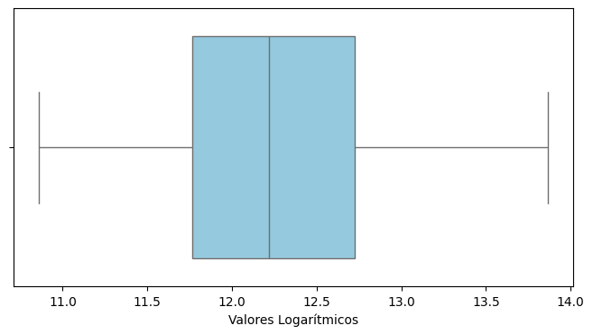
mport pandas as pd
import numpy as np
# Cargar el archivo
df = pd.read_csv('C:/AST_Misisipi/Modelado_Misisipi/Datos_Caudal_Horario_Log.csv', parse_dates=['datetime'])
# Reemplazar los valores de la columna "Caudal" con la inversa del logaritmo de "Caudal_log"
df['Caudal'] = np.exp(df['Caudal_log'])
# Seleccionar solo las columnas datetime y Caudal
df = df[['datetime', 'Caudal']]
# Guardar el nuevo archivo con el nombre indicado
df.to_csv('C:/AST_Misisipi/Modelado_Misisipi/Datos_Caudal_Est.csv', index=False)
# Asignar el nuevo DataFrame a la variable caudal
caudal = df.copy()
# Archivo listo para usar en aplicación de modelos